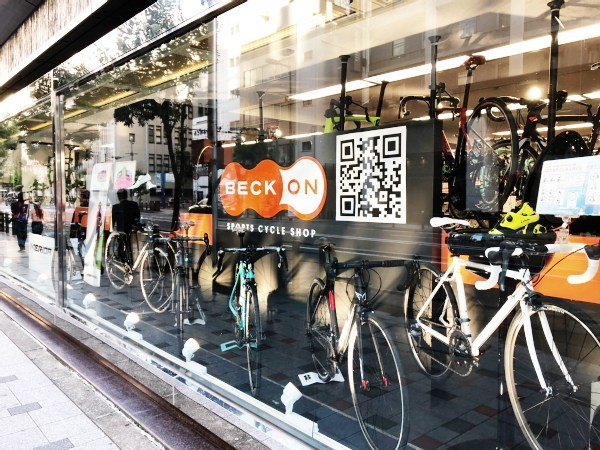

Via Cycles Village

大阪地下鉄谷町線 天神橋筋6丁目駅 徒歩2分
おそらく淀川以南の大阪の市街で最も北側に位置するのがビアサイクルビレッジ。緑色の看板と、コンテナ風の大きなテンポがオシャレです。
シルベストサイクル 梅田店

JR大阪駅 徒歩4分
店内スペースが大きく二つに分かれているのが特徴で、完成車スペースと、ウェアやメンテナンス、パーツ類が揃ったペースに分かれています。
スポーツサイクルショップベックオン

大阪地下鉄御堂筋線 本町駅 徒歩2分
クロスバイク、ロードバイクともにありますが、ロードバイクのほうがやや多め。シートやパーツ類が奥のスペースにたくさんあって、関連グッズを購入するには便利そうです。